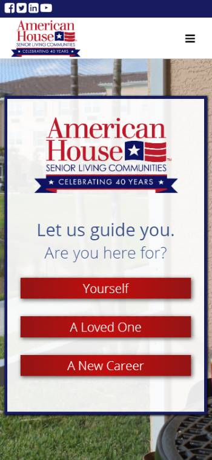

Visual Hierarchy
Apple
Apple's website is a great example of many design principles—contrast, Hick's Law, white space (to name a few)—but the principle that stands out the most to me is visual hierarchy. The main focus of the site is a stunning visual of the new iPhone, followed closely by the text "iPhone 11 Pro" above it. Other focal areas are the details and call-to-action links, the next product area (which is purposely partially showing "above the fold" at the bottom of the screen), and the top navigation.
Hick's Law
American House
American House owns dozens of retirement properties throughout the midwest and Florida with various offerings and amenities. The site is massive and contains an overwhelming amount of information. However, the site greatly simplifies the process of finding information by limiting choices over several steps and providing relevant information and filters to guide the search.
White Space and Clean Design
Treehouse
The Treehouse website uses white space very effectively. There is both macro and micro white space that enhances the design and readability of the site, giving it a clean, easy look and feel. I found the effect relaxing and more enjoyable than viewing a site crammed with information and distractions. (This screen shot is about halfway down the homepage.)